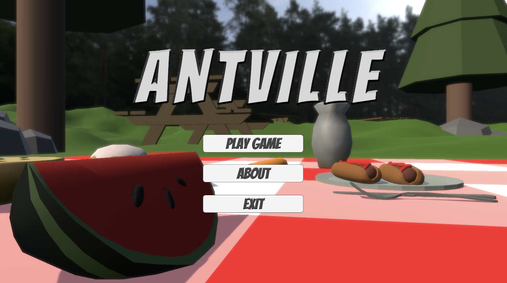

In my work as a student at the Unveristy of Toronto (UofT), I have immersed myself in an array of skills in which allowed me to discover my future aspirations. The Institute of Communication, Culture, Information and Technology (ICCIT), offers various engaging hands-on experiences. Experiences include me having practice in coding, designing, editing, 3D modeling, etc. Having these diverse skills allow me to have insight on the different potential careers I can do in the future. In this page of my website, I will be showcasing some of the highlights of projects I was able to do in my experience at UofT.
SPACE4KIDS
This is my most recent project where I used the Adobe XD application to create a prototype website. The objective for this website was to make an interactive experience for young students to learn about the solar system.
Feel free to click in the image above to interact with the SPACE4KIDS website.
ANTVILLE
In my second year at UofT, I took a course that taught the foundations of making an immersive environment using Autodesk Maya and Unity. The main idea of this game/environment is for the user to take on the perspective of an ant in a picnic. I used Autodesk Maya to create my 3D models, and used the game engine Unity to put all my assets together to create "Antville".

Unfortunately, I am unable to add in the complete game into this website as the file size is way too big and has not been published online. However, here is a video where you can see the progression of the environment in its early stages.
DAY OFF - A SHORT FILM
This short film was made in the course: Technology and Creative Expression, which is offered at the University Of Toronto Mississauga.
This video/film focuses on Natalia, a dedicated worker in a cycle of workdays, finding relaxation and support on her rare day off from her downtime, friends, and trusty dog.